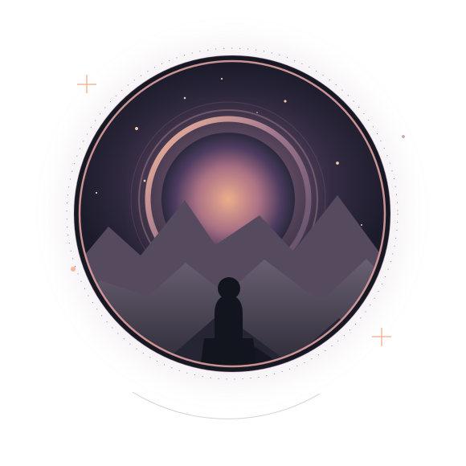
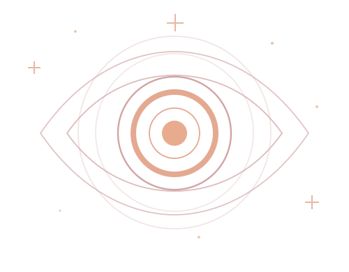

✦ BEYOND THE EVERYDAY ISSUE 001
There is more
to the world
than meets the eye.
Strange places. Forgotten stories. Unanswered questions. Your curiosity has a home here.
✳ A DIFFERENT PERSPECTIVE ON THE UNKNOWN

THE UNDISCOVERED LOOK CLOSERSCROLL TO UNRAVEL 01 / INFINITE POSSIBILITIES
✳
Not every story has an answer. That's what makes it worth exploring.
THE MYSTERY LENS PHILOSOPHY / 001 FROM THE JOURNAL
Stories to get lost in.
A collection of curiosities from the edges of history, legend, and the unexplained.
Handpicked from the Mystery Lens archive
No mysteries found.
Try another search or select a different topic.

KEEP QUESTIONING / ALWAYS EXPLORINGTHE STORY BEHIND THE LENS
A little curiosity
goes a long way.
Mystery Lens is a space for anyone who has ever wondered what's hidden behind a legend, beyond a familiar place, or within a forgotten piece of history.
From haunting folklore to remarkable natural phenomena, the stories here invite you to look a little closer.
Explore the full archiveSTAY CURIOUSThe next mystery
Discover more stories The next mystery
is waiting.
There's always another story worth uncovering.